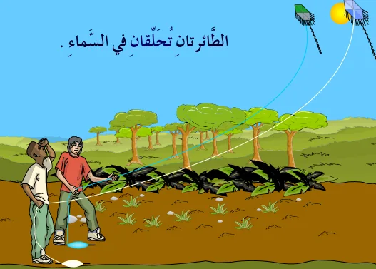
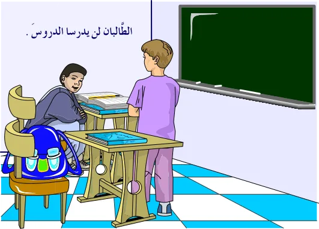
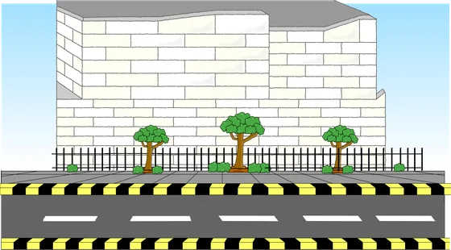

إعراب الأفعال الخمسة
الدرس 1 من 3 — التراكيب
أُلاحظ
أقرأ الأمثلة وأستمع إليها، وألاحظ الكلمات الملوّنة.
- الطَّائِرَتَانِ تُحَلِّقَانِ فِي السَّمَاءِ.
- الطَّالِبَانِ لَنْ يَدْرُسَا الدُّرُوسَ فِي الْبَيْتِ.
- لَا تَلْعَبَا فِي الشَّارِعِ.
أستنتج
الأفعال الخمسةأفعالٌ مضارعة أُسندت إلى واو جماعة الغائبين أو واو جماعة المخاطبين، أو ألف الاثنين أو ألف الاثنتين، أو ياء المخاطبة.
صورها
| الصورة | مثال |
|---|---|
| ألف الاثنين | أَنْتُمَا تَسْتَحِقَّانِ الْمُكَافَأَةَ. |
| ألف الاثنين | الصَّدِيقَانِ يَتَخَاصَمَانِ ثُمَّ يَتَصَالَحَانِ. |
| واو الجماعة | التَّلَامِيذُ يَكْتُبُونَ الدَّرْسَ. |
| واو الجماعة | أَنْتُمْ تَكْتُبُونَ الدَّرْسَ. |
| ياء المخاطبة | كَيْفَ تُنْفِقِينَ نُقُودَكِ؟ |
إعراب الأفعال الخمسة
مرفوعمنصوبمجزوماضغط على الكلمة الملوّنة لترى إعرابها، وعلى 🔊 لتستمع.
- الرفع تُرفع الأفعال الخمسة بثبوت النون.

الطَّائِرَتَانِ تُحَلِّقَانِ فِي السَّمَاءِ. - النصب تُنصب بحذف النون إذا سبقها حرف نصب مثل: أنْ، لنْ، كي.

الطَّالِبَانِ لَنْ يَدْرُسَا الدُّرُوسَ فِي الْبَيْتِ. - الجزم تُجزم بحذف النون إذا سبقها حرف جزم مثل: لمْ، لا الناهية.

لَا تَلْعَبَا فِي الشَّارِعِ.
عند الحذف مع واو الجماعة نكتب ألفاً بعد الواو: لن يكتبوا، لم يكتبوا.
أُطبّق
1أيّ هذه الأفعال من الأفعال الخمسة؟
2علامة رفع «يلعبون» في: «الْأَطْفَالُ يَلْعَبُونَ»
3اختر الصحيح: «أَنْتُمْ … بِجِدٍّ»
4اختر الصحيح: «لم … الْوَلَدَانِ الْوَاجِبَ»
5اختر الصحيح: «يَا فَاطِمَةُ، لَا … الطَّعَامَ»
6اختر الصحيح: «أُرِيدُ أَنْ … مُبَكِّرِينَ»
7ما إعراب «تُحلِّقانِ» في: «الطَّائِرَتَانِ تُحَلِّقَانِ فِي السَّمَاءِ.»؟
8ما إعراب «يدرسا» في: «الطَّالِبَانِ لَنْ يَدْرُسَا الدُّرُوسَ فِي الْبَيْتِ.»؟
إجابات صحيحة من أول محاولة:
أتمرّن أكثر
أستمع، ثمّ أرتّب الكلمات لأكوّن الجملة:
✓ أنهيتَ هذا الدرس
دروس العربية — للاستعمال التعليمي.